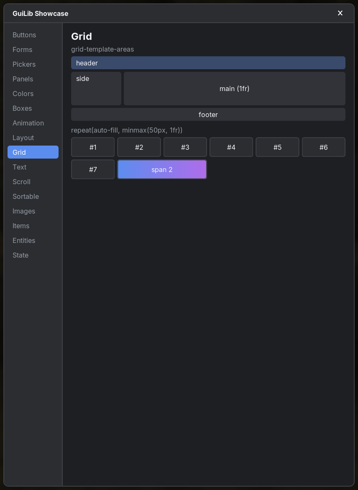
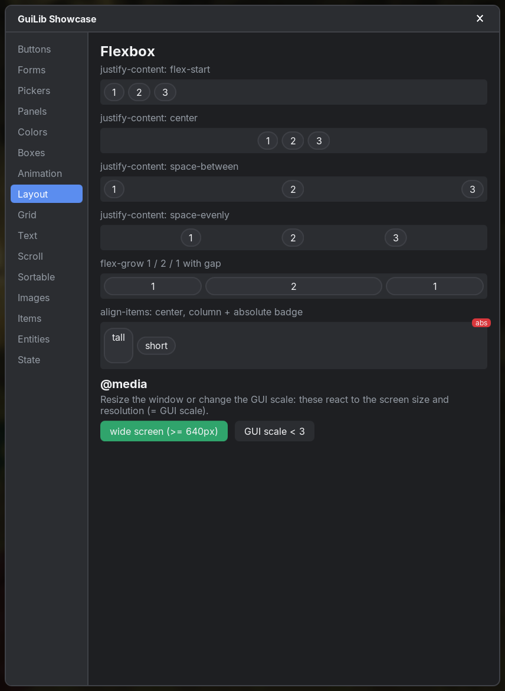
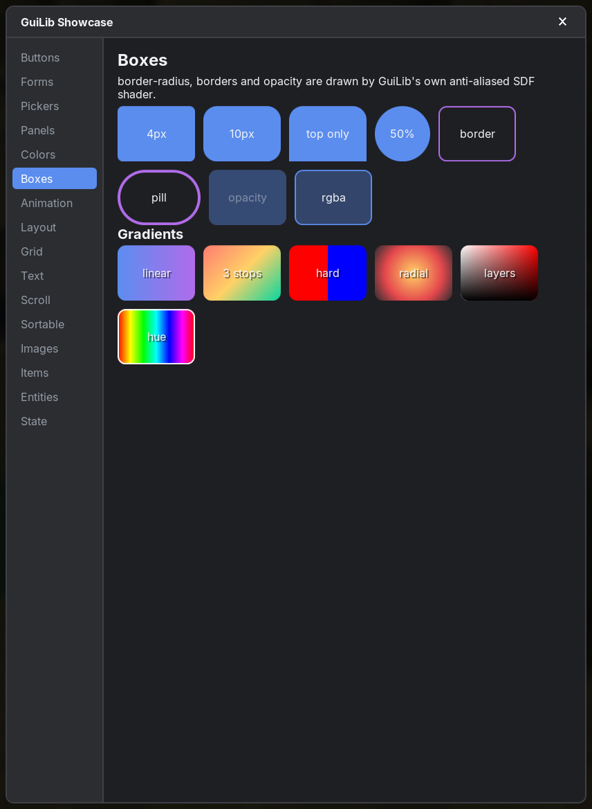
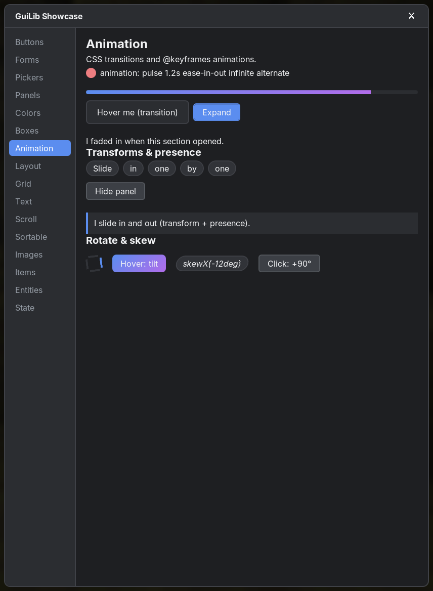

CSS
GuiLib implements the parts of CSS that UIs need, with the real cascade. This page lists every supported selector, value and property.
#Where styles come from
.cssfiles from resources:GuiLib.open(App, stylesheets = listOf("mymod:ui/app.css")).- Inline
stylestrings:div(style = "width: 20px; color: red"). - The built-in user-agent stylesheet
assets/guilib/css/ua.css(lowest priority) that styles tags and controls. - Cascade, specificity,
!important, inheritance andinherit/initial/unsetwork like the web. - Invalid or unsupported CSS is skipped with a warning (
file:line:col, "did you mean …"), never a crash.
#Selectors
| Kind | Supported |
|---|---|
| Simple | * tag .class #id [attr] [attr=v] [attr^=v] [attr$=v] [attr*=v], compounds like button.primary:hover |
| Combinators | descendant a b, child a > b, a + b, a ~ b, lists a, b |
| State | :hover :active :focus :focus-visible :focus-within :disabled :enabled :checked |
| Structural | :first-child :last-child :only-child :root :not(…) :nth-child() :nth-last-child() :nth-of-type() :nth-last-of-type() (odd, even, 3, 2n+1, -n+3) |
| At-rules | @keyframes; @media (nestable): comma lists, not/only, screen/all/print, and/or; features width height aspect-ratio orientation in GUI px, resolution = Minecraft's GUI scale (min-resolution: 3dppx or 3x), hover (hover), pointer (fine), prefers-reduced-motion (no-preference), prefers-color-scheme (dark); min-/max- prefixes and range syntax (400px <= width < 640px). Styles update when the window size or GUI scale changes. |
::before), @import, @font-face, @container, @supports, :nth-child(… of S).#Values
| Kind | Supported |
|---|---|
| Lengths | px (GUI pixels), %, em, rem, vw, vh, vmin, vmax, unitless 0 |
| Colors | #rgb #rgba #rrggbb #rrggbbaa, rgb()/rgba() (comma or space syntax), hsl()/hsla(), all named colors, transparent, currentColor |
| Variables | --name: value with var(--name, fallback) |
| Math | calc(), min(), max(), clamp(), e.g. width: calc(100% - 2em) |
| Angles | deg rad grad turn |
#Box model & layout
| Group | Properties |
|---|---|
| Box | width height min-width min-height max-width max-height box-sizing margin(-*) padding(-*) |
| Border | border border-(top|right|bottom|left) border-width border-style border-color border-*-width/-style/-color border-radius border-*-radius |
| Display | display: block inline inline-block flex inline-flex grid inline-grid none |
| Position | position: static relative absolute fixed; top right bottom left inset z-index |
| Overflow | overflow overflow-x overflow-y (visible hidden auto scroll), scrollbar-width (auto thin none), scrollbar-color: <thumb> <track> |
| Flexbox | flex flex-direction flex-wrap flex-flow flex-grow flex-shrink flex-basis justify-content align-items align-self place-items gap row-gap column-gap order, auto margins |
| Grid | grid-template-columns / -rows (px % fr auto min-content max-content minmax() repeat(n | auto-fill | auto-fit, …)), grid-template-areas grid-area grid-row grid-column grid-*-start/-end (lines, negative lines, span n, area names), grid-auto-rows grid-auto-columns grid-auto-flow (row column dense), justify-items justify-self place-self |


#Text & visuals
| Group | Properties |
|---|---|
| Text | color font-family font-size font-weight font-style line-height text-align white-space text-overflow text-decoration text-shadow |
| Background | background background-color background-image: comma list of layers (first on top): url("modid:path.png"), linear-gradient(…) (angles, to right, stops with positions, hard stops), radial-gradient(…) (circle/ellipse, size keywords, at <position>). Gradients respect border-radius. |
| Shadow | box-shadow: none or a comma list of [inset] <x> <y> [<blur> [<spread>]] [<color>] (first on top, color defaults to currentColor). Real Gaussian blur that follows border-radius; outer shadows are never drawn under the box, so translucent backgrounds stay clean. Animatable. |
| Visual | opacity visibility object-fit |
| Interaction | cursor (auto default pointer text not-allowed crosshair move ns-resize ew-resize row-resize col-resize grab grabbing; a drag cursor stays while the left button is held), pointer-events, user-select (parsed only) |

#Animation
transition (+ -property -duration -timing-function -delay) and animation (+ -name -duration -timing-function -delay -iteration-count -direction -fill-mode -play-state) with @keyframes. Easing: linear ease ease-in ease-out ease-in-out cubic-bezier() steps().
Animatable: colors, lengths (also px ↔ % via calc), numbers (opacity, flex-grow, font-size …), radii, line-height, text-shadow, box-shadow, scrollbar colors, gradient stop colors, visibility, transform, transform-origin. Other values switch at 50 % in keyframes and don't transition.
.card { transition: background-color 150ms, transform 150ms ease-out; }
.card:hover { background-color: #333; transform: scale(1.05); }
@keyframes spin { to { transform: rotate(360deg); } }
.spinner { animation: spin 1s linear infinite; }
@keyframes slide-in { from { opacity: 0; transform: translateX(-20px); } }
.item { animation: slide-in 300ms ease-out backwards; } /* + style = "animation-delay: ${i * 50}ms" */
#Transforms
transform with translate() translateX() translateY() scale() scaleX() scaleY() rotate() skew() skewX() skewY() matrix(a, b, c, d, tx, ty) and none; transform-origin (lengths, %, keywords; default 50% 50%).
- Like CSS, transforms don't affect layout. Clicks and
getBoundingClientRect()follow the transformed box; hit-testing uses the exact rotated shape. - Translate/scale stay pixel-exact, and scaled text is re-rendered at its new size, so it stays sharp. Rotated or skewed content is drawn through a matrix.
- Transforms interpolate when both lists have the same functions in the same order (
nonematches anything).
#Theming built-in controls
Every built-in control is made of plain elements with guilib-* classes and is styled by ua.css, which has the lowest priority. Override anything in your own stylesheet, or change the shared variables on :root:
:root {
--guilib-accent: #e67e22; /* sliders, switches, tabs, focus borders, selected states */
--guilib-surface: #2b2d31;
--guilib-surface-2: #1e1f22;
--guilib-border: #4e5058;
--guilib-text-muted: #b5bac1;
}
/* Restyle a single control */
.guilib-switch.checked .guilib-switch-track { background-color: #3ba55d; border-color: #3ba55d; }
.guilib-slider { width: 160px; }
.guilib-toast.error { background-color: #2a1416; }The CSS classes of each control are listed on Form controls and Panels & overlays.